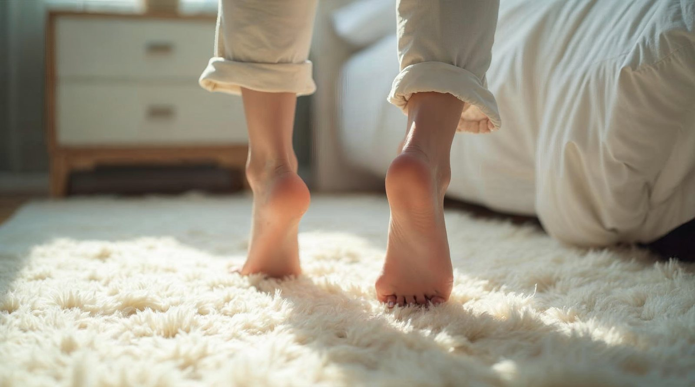
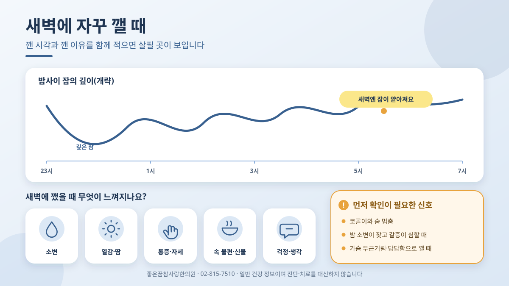

이종호 한의사 감수좋은꿈참사랑한의원 대표원장 (한의사 면허번호 19769)발행 2026-11-22 · 수정 2026-11-26
이 글의 차례
새벽에 눈이 번쩍 떠집니다. 방은 아직 캄캄하고, 손을 뻗어 휴대폰을 켜 보면 3시 47분입니다. 알람까지 세 시간이나 남았는데 정신은 또렷합니다. 다시 자 보려고 눈을 감지만 머릿속으로 이런저런 생각이 지나갑니다.
4시 반쯤 되면 창밖이 희미하게 밝아 오고, 그때쯤 겨우 선잠이 들었다가 알람 소리에 무겁게 일어납니다. 그날 하루는 길고, 오후 3시쯤 되면 눈꺼풀이 천근만근입니다.
진료실에서 이런 말씀을 자주 듣습니다. "원장님, 잠드는 건 괜찮은데 꼭 새벽에 깨요. 깨면 다시 못 자요." 어떤 분은 체념하듯 "나이 들어서 그런가 봐요" 하시고, 어떤 분은 "매일 같은 시간에 깨니까 이제 그 시간이 무서워요"라고도 하십니다.
그 말씀을 들으면 저도 마음이 무겁습니다. 남들 다 자는 시간에 혼자 깨어 천장을 보고 있는 그 기분, 해 보신 분은 아실 겁니다. 시간은 더디 가고, 생각은 자꾸 어두운 쪽으로 흐르고, 아침이 오는 게 반가우면서도 두렵지요.
새벽에 깨는 일은 한 가지 원인으로 설명되지 않습니다. 그래서 저는 몇 시쯤, 무엇 때문에 깨는지를 아는 것이 첫걸음이라고 말씀드립니다. 깬 이유를 몇 밤만 적어 보아도 살펴볼 방향이 훨씬 또렷해집니다.
왜 새벽에 깨게 될까요
밤잠은 처음부터 끝까지 고르게 깊은 것이 아닙니다. 잠든 뒤 처음 몇 시간이 가장 깊고, 새벽으로 갈수록 잠이 얕아집니다. 그래서 새벽에는 작은 소리, 조금 더운 이불, 살짝 마려운 소변 같은 자극에도 쉽게 깹니다.
나이가 들면 이런 경향이 조금 더 두드러지기도 합니다. 여기까지는 누구에게나 있는 일입니다. 문제는 깬 뒤에 다시 잠들지 못하는 날이 이어질 때입니다.
진료실에서 이야기를 들어 보면, 깨는 순간 무엇을 느꼈는지에 따라 사정이 꽤 다릅니다.
화장실 때문에 깨는 분들이 있습니다. 한 번이면 그러려니 하는데 두세 번씩 깨면 잠이 조각조각 납니다. 저녁에 차나 물을 많이 드셨는지, 낮에는 오히려 적게 드시는지부터 여쭙니다. 갈증이 유난히 심하거나 소변 볼 때 불편하다면 비뇨의학과나 내과 진료도 함께 받아 보시라고 권합니다.
덥거나 땀이 나서 깨는 분들도 있습니다. 이불을 걷어차고 목덜미가 축축한 채로 깹니다. 방이 너무 덥거나 이불이 두꺼운 탓일 때도 있고, 몸에서 열감이 오르는 때일 수도 있습니다. 갱년기 무렵의 여성분들께서 이런 말씀을 자주 하십니다.
어딘가 아파서 깨는 분들도 많습니다. 돌아눕다가 어깨가 결려 깨고, 허리가 뻐근해 깨고, 무릎이 시큰해 깹니다. 이런 분께는 잠에서 깬 뒤 아픈 건지, 아파서 깬 건지를 꼭 여쭙니다. 비슷해 보여도 밤에 겪는 일은 다르기 때문입니다.
속이 불편해 깨는 분들도 있습니다. 늦게 저녁을 먹거나 야식을 한 날, 새벽에 신물이 올라오거나 명치가 쓰려서 깹니다. 누운 자세에서 더 심해지기도 합니다.
그리고 걱정과 함께 깨는 분들이 있습니다. 눈을 뜨자마자 어제 일, 오늘 일, 돈 걱정, 가족 걱정이 줄지어 떠오릅니다. 깬 이유가 걱정이었는지, 깨고 나서 걱정이 시작된 건지 본인도 헷갈려하십니다. 어느 쪽이든 새벽의 생각은 낮보다 어둡고 크게 느껴진다는 점은 기억해 두시면 좋겠습니다.
여기에 늦은 시간의 커피나 자기 전 술 한 잔이 더해지면 새벽잠은 더 얕아집니다. 술은 잠드는 것을 도와주는 것처럼 느껴지지만 수면 후반을 얕게 만들어 새벽에 깨기 쉽게 한다고 알려져 있습니다. 또 코를 심하게 골고 숨이 멎는 것 같다는 말을 들으셨다면, 수면무호흡 때문에 반복해서 깨는 것일 수 있으니 먼저 확인이 필요합니다.
이런 분들을 자주 뵙습니다
새벽 4시쯤 눈이 떠지면 그때부터 출근 걱정이 시작되는 직장인이 있습니다. 오늘 보고는 어떻게 하지, 그 메일에 답을 했던가, 하다 보면 날이 밝습니다.
이런 분께는 걱정을 저녁 일찍 종이에 적어 두는 방법과, 깼을 때 시계를 보지 않는 방법을 함께 정해 보자고 말씀드립니다. 시계를 보는 순간 "이제 몇 시간밖에 못 자네" 하는 계산이 시작되고, 그 계산이 잠을 더 멀리 쫓아내기 때문입니다.
새벽에 소변 때문에 두세 번씩 깨는 어르신들도 자주 뵙습니다. 어르신들은 대개 "나이 들면 다 그렇지" 하고 넘기십니다. 저는 그럴 때 저녁 이후에 드시는 물과 차의 양과 시간을 먼저 일주일만 적어 와 보시자고 부탁드립니다. 적어 보면 저녁 식사 뒤 과일과 차를 넉넉히 드시는 습관이 보이기도 합니다. 소변 증상이 계속되면 비뇨의학과 진료도 함께 권합니다.
새벽마다 덥고 땀이 나서 깨는 분들도 계십니다. 겨울인데도 이불을 걷어차고, 다시 추워서 덮었다가, 또 더워서 걷어차기를 되풀이합니다. 이런 분께는 방 온도와 이불부터 가볍게 바꿔 보시고, 몸의 열감이 하루 중 언제 오르는지 함께 살펴보자고 말씀드립니다. 낮에도 얼굴이 화끈거리는지, 손발은 오히려 찬지 같은 것들이 단서가 됩니다.
교대 근무를 하시거나 육아로 밤중에 자주 일어나야 하는 분들도 있습니다. 이분들은 원래 몸의 리듬이 자꾸 흔들리는 생활을 하고 계셔서, 새벽에 한 번 깨면 몸이 낮인지 밤인지 헷갈려 합니다. 이럴 때는 깨는 것을 막기보다 일어나는 시각과 빛을 보는 시간을 어떻게 일정하게 맞출지부터 함께 고민합니다.

깨었을 때, 그리고 낮과 저녁에 해 볼 것
새벽에 깼을 때 가장 먼저 부탁드리고 싶은 건 시계를 보지 않는 것입니다. 휴대폰도 켜지 마세요. 밝은 화면은 몸에 "아침이 왔다"는 신호를 줍니다. 눈을 감은 채로 숨을 천천히 길게 내쉬어 보세요. 들이쉴 때보다 내쉴 때를 조금 더 길게 하면 몸이 한결 느슨해지는 분이 많습니다.
그래도 20분 넘게 뒤척인다 싶으면 잠시 일어나세요. 환한 불은 켜지 말고, 은은한 불빛만 켠 거실에 조용히 앉아 따뜻한 물을 한 모금 드시거나 가만히 계시면 됩니다. 졸음이 다시 오면 그때 눕습니다. 억지로 누워 버티면 잠자리가 "애쓰는 곳"으로 기억되기 쉽습니다.
낮에는 일어나는 시각을 일정하게 지키는 것이 먼저입니다. 새벽에 깨서 잠을 설쳤더라도 아침에 늦잠으로 보충하지 마시고, 평소 시각에 일어나 커튼을 열고 햇빛을 보세요. 주말에도 평일과 크게 다르지 않게 하는 편이 좋습니다. 낮잠이 몹시 필요하면 오후 3시 전, 20분 안쪽으로만 짧게 주무세요. 길고 늦은 낮잠은 그날 밤잠을 더 짧게 만들기도 합니다.
커피는 점심 무렵까지만 드시는 것을 권합니다. 오후에는 따뜻한 물이나 보리차로 바꿔 보세요.
저녁에는 식사를 잠들기 3시간 전쯤 마치고, 그 뒤로는 물과 차를 한꺼번에 많이 드시지 마세요. 물은 낮 동안 나눠서 충분히 드시면 됩니다. 자기 전 술은 줄여 보시고, 걱정이 많은 날은 저녁 8시쯤 마음에 걸리는 일을 종이에 적어 두세요. 새벽에 그 생각이 떠오르면 "그건 종이에 있다" 하고 내려놓는 연습을 합니다.
침실은 어둡고 너무 덥지 않게 맞춥니다. 땀이 많은 분은 이불을 가벼운 것으로 바꾸고, 잠옷도 땀을 잘 흡수하는 것으로 입어 보세요. 잠들기 한 시간 전부터는 조명을 낮추고 밝은 화면을 줄입니다.
이 가운데 한두 가지만 먼저 골라 일주일 해 보시고, 그동안 깬 시각과 깬 이유를 적어 두세요. 처음부터 다 하려고 하면 오히려 그게 부담이 되어 잠을 방해합니다.
새벽의 생각과 조금 거리를 두는 법
새벽에 깬 분들이 제일 힘들어하시는 건 사실 깨는 것 자체보다 그 뒤에 밀려오는 생각입니다. 낮이었다면 "그 정도야 뭐" 하고 넘겼을 일이 새벽 4시에는 산처럼 커 보입니다. 몸이 아직 반쯤 잠들어 있고 주변은 고요하니, 생각을 덮어 줄 다른 것이 없어서 그렇습니다.
저는 이런 분들께 새벽의 생각을 너무 믿지 마시라고 말씀드립니다. 그 시간에 떠오른 걱정은 아침에 다시 보면 대개 크기가 줄어 있습니다. 그러니 새벽에는 답을 내려고 하지 말고 "이건 아침에 생각하자" 하고 미뤄 두셔도 괜찮습니다.
머리맡에 작은 메모지와 펜을 두고, 정말 잊으면 안 될 것 같은 일이 떠오르면 불을 켜지 않은 채 한 단어만 적어 두는 분도 계십니다. 적고 나면 붙들고 있던 손을 조금 놓을 수 있습니다.
생각을 억지로 멈추려 하면 오히려 더 또렷해집니다. 대신 주의를 몸으로 옮겨 보세요. 이불이 몸에 닿는 느낌, 숨이 코끝을 지나가는 느낌, 배가 오르내리는 느낌에 가만히 마음을 둡니다. 생각이 다시 끼어들면 "아, 또 생각했네" 하고 숨으로 돌아오면 됩니다. 잘 안 되는 게 당연합니다. 몇 번 되풀이하는 것만으로도 충분히 잘하고 계신 겁니다.
어떤 분은 새벽에 깨는 날이 늘면서 잠자리에 들 때부터 "오늘도 4시에 깨겠지" 하는 마음이 든다고 하십니다. 그 예상이 긴장을 만들고, 긴장이 다시 새벽잠을 얕게 합니다. 이 고리를 알아차리는 것만으로도 조금 숨이 트입니다. 깨더라도 다시 누워 쉬면 된다, 오늘 못 자면 내일 밤이 있다, 그렇게 스스로에게 말해 주세요.
얼마나 지켜보고, 언제 진료를 받을까요
깨는 시각과 이유는 일주일만 적어도 반복되는 모습이 보이는 경우가 많습니다. 생활을 바꿔 보신 뒤에는 2~3주 더 기록해서 비교해 보세요.
새벽에 깨는 일이 한 달 넘게 이어지고 낮에도 피곤하거나 집중이 어렵다면, 혼자 참지 마시고 상담을 받아 보시길 권합니다.
이런 증상은 먼저 확인이 필요합니다
- 코를 크게 골고 숨이 멎는 것 같다는 말을 들은 경우(수면 검사가 가능한 의료기관)
- 밤에 소변으로 자주 깨고 갈증이 심한 경우
- 스스로를 해칠 생각이 들면 ☎ 109로 바로 연락하세요.
이런 신호가 있으면 한의원보다 가까운 병원이나 응급실을 먼저 찾으세요.
먼저 이렇게 여쭙니다
좋은꿈참사랑한의원에 처음 오시면 저는 깨는 시각과 이유부터 차례로 여쭙니다.
- 대개 몇 시쯤 깨시는지
- 깼을 때 소변이 마려웠는지, 더웠는지, 어디가 아팠는지, 속이 불편했는지, 아니면 걱정이 먼저 떠올랐는지
- 깬 뒤 다시 잠들기까지 얼마나 걸리는지
- 잠들기 전 서너 시간 동안 무엇을 드시고 마셨는지
그다음 양손을 올려 봐 달라고 말씀드립니다. 왼쪽과 오른쪽 손목을 번갈아 짚으며 맥이 손끝에 어떻게 닿는지, 가볍게 댈 때와 깊이 누를 때 어떻게 다른지, 양쪽이 고른지 살핍니다.
맥을 짚는 동안에도 몸이 따뜻한 편인지 찬 편인지, 손발은 어떤지, 식사와 소화는 편한지, 대소변은 어떤지 여쭙습니다. 필요하다고 판단되면 혀를 보거나 배를 살피고, 통증 때문에 깬다면 아픈 부위의 움직임도 함께 확인합니다.
그렇게 들은 이야기를 모아 침이나 한약 상담 등 지금 상태에 맞는 방법을 함께 정합니다. 진료실을 나서기 전에는 집에서 바꿔 볼 한 가지와 다음 진료에서 확인할 점을 말씀드립니다. 다시 오시면 지난번 기록과 비교해서 깨는 횟수와 다시 잠드는 시간이 어땠는지부터 이어서 여쭙니다.
오실 때 일주일 동안 깬 시각과 그때 느낀 것, 다시 잠들기까지 걸린 대략의 시간, 저녁 식사 시각과 마신 커피·술·물·차의 양과 시간, 복용 중인 약을 메모해 오시면 이야기가 훨씬 빨라집니다. 기억나는 만큼만 적으셔도 괜찮습니다. 빈칸이 있어도 그 빈칸까지 같이 보면서 이야기를 나누면 됩니다.
마치며
새벽에 홀로 깨어 있는 시간은 참 외롭습니다. 그 시간에 떠오르는 생각들은 실제보다 크고 무겁게 느껴지지요. 그래도 그 새벽이 매번 똑같은 이유로 찾아오는 것은 아닙니다. 소변 때문인 날, 더워서인 날, 어깨가 아파서인 날, 걱정 때문인 날이 섞여 있습니다. 그 이유를 하나씩 알아 가다 보면 손댈 곳이 보이기 시작합니다.
오늘 밤 혹시 또 깨시거든, 시계를 보지 마시고 그때 무엇을 느꼈는지만 기억해 두세요. 아침에 한 줄로 적어 두시면 됩니다. 다음에 저를 만나시면 그 한 줄부터 함께 읽어 보겠습니다.
함께 읽으면 좋은 글
- 자다가 소변 때문에 깨면 잠과 어떤 관련이 있나요?
- 밤에 자꾸 시계를 보게 될 때는 어떻게 하나요?
- 겨울 어르신 밤잠이 짧아지고 새벽에 일찍 깰 때

여쭙는 것
- 대개 몇 시쯤 깨시는지
- 깼을 때 소변이 마려웠는지, 더웠는지, 어디가 아팠는지, 속이 불편했는지, 아니면…
- 깬 뒤 다시 잠들기까지 얼마나 걸리는지
먼저 확인이 필요한 신호
- 코를 크게 골고 숨이 멎는 것 같다는 말을 들은 경우(수면 검사가 가능한 의료기관)
- 밤에 소변으로 자주 깨고 갈증이 심한 경우
- 스스로를 해칠 생각이 들면 109로 바로 연락하세요.
자주 묻는 질문
새벽에 깨는 것은 어떤 원인 때문인가요?
수면 후반의 얕아진 잠, 늦은 카페인과 자기 전 술, 밤 소변, 통증, 열감, 속 불편, 걱정, 수면무호흡 등 여러 가지가 있습니다. 몇 시에 무엇 때문에 깨는지를 먼저 살펴봅니다.
나이가 들면 새벽에 깨는 건 어쩔 수 없나요?
나이가 들면 잠이 얕아지는 경향은 있지만, 소변이나 통증, 열감처럼 깨는 이유가 따로 있는 경우도 많아 기록해 살펴볼 만합니다.
새벽에 깨면 꼭 병원에 가야 하나요?
코골이와 호흡 멎음이 의심되거나, 밤 소변과 갈증이 심하거나, 가슴이 두근거려 깨는 일이 잦거나, 우울감이 깊을 때는 먼저 해당 의료기관에서 진료받으시기를 권합니다. 깰 때 가슴이 아프거나 숨이 차다면 가까운 응급실로 가세요.
수면제를 먹고 있는데 진료받을 수 있나요?
네, 복용 중인 약을 모두 알려 주세요. 약은 처방한 의사와 상의 없이 줄이거나 끊지 않습니다.
새벽에 깨면 그냥 일어나는 게 나을까요?
다시 잠들기 어려워 20분 넘게 뒤척인다면 잠시 일어나 불빛을 낮춘 곳에서 조용히 있다가 졸릴 때 다시 눕는 편을 권합니다. 이때 시계와 휴대폰은 보지 않는 것이 좋습니다.
좋은꿈참사랑한의원은 재진 때 지난번 이야기부터 이어서 여쭙니다. 진료시간과 예약은 오시는 길에서 확인하세요.
어디서 상담받을 수 있나요?
좋은꿈참사랑한의원은 서울 동작구 만양로2길 2 신성빌딩 3층·5층(서울 동작구 상도동, 7호선 상도역 3번 출구 근처)에 있습니다. 한의사 3명(이종호 대표원장, 조영기 수석진료원장, 정원영 진료원장)이 진료합니다. 진료시간은 평일 09:30~20:00(점심 13:00~14:00), 토·일·공휴일 09:30~15:00이며, 방문 전 전화로 확인을 권합니다. 예약은 네이버 예약, 카카오톡 상담, 전화 02-815-7510로 받습니다.
이 글은 일반적인 건강 정보이며 개인의 진단이나 치료를 대신하지 않습니다. 증상이 있거나 복용 중인 약이 있다면 진료를 통해 확인하세요. 치료 효과는 개인마다 다를 수 있습니다.
작성 기준: 일반적으로 알려져 있는 건강 정보를 참고해 정리했습니다(대표원장 감수). 증상 기록은 1~2주 동안 하루 1회, 비슷한 시간에 적어 오시면 지난 상태와 비교하기 쉽습니다.